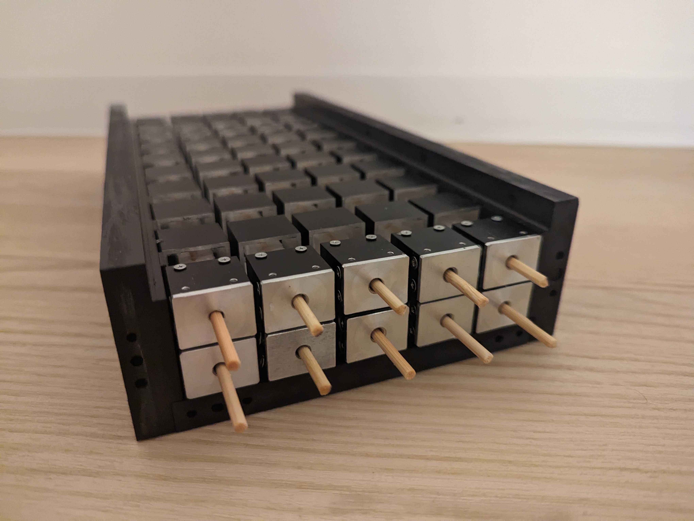
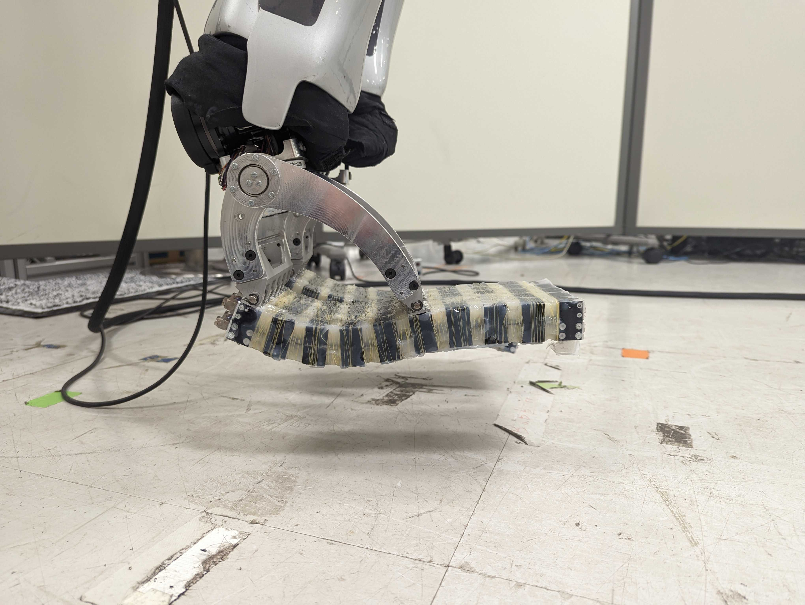
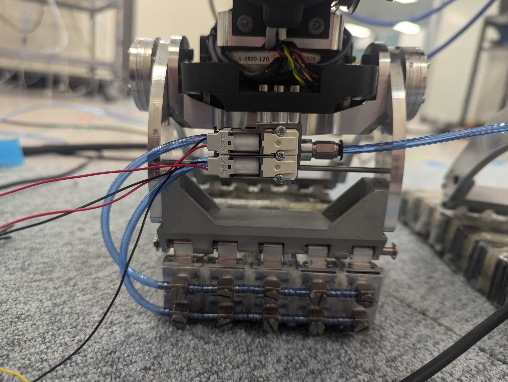
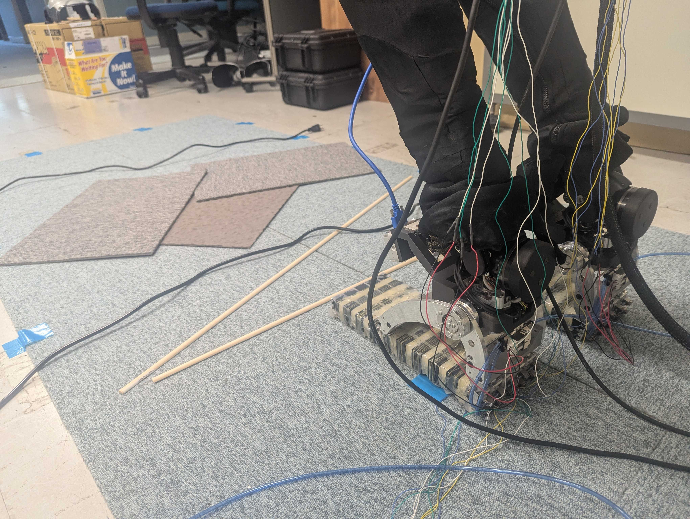
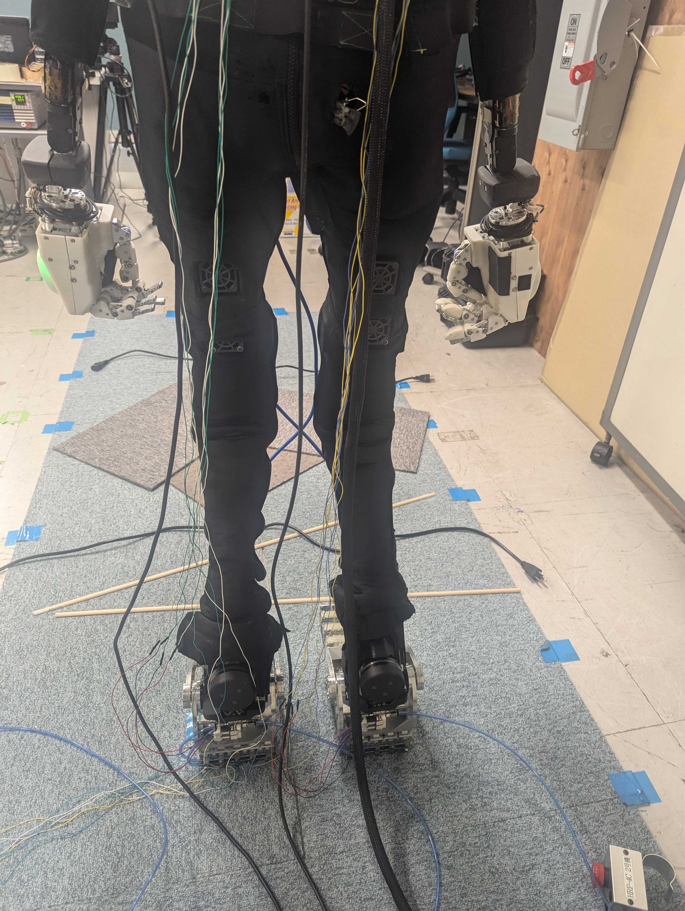
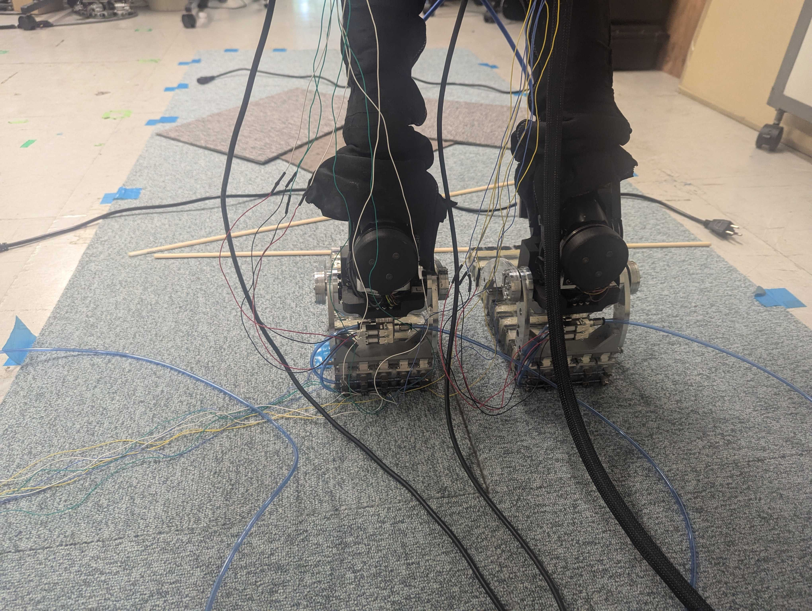
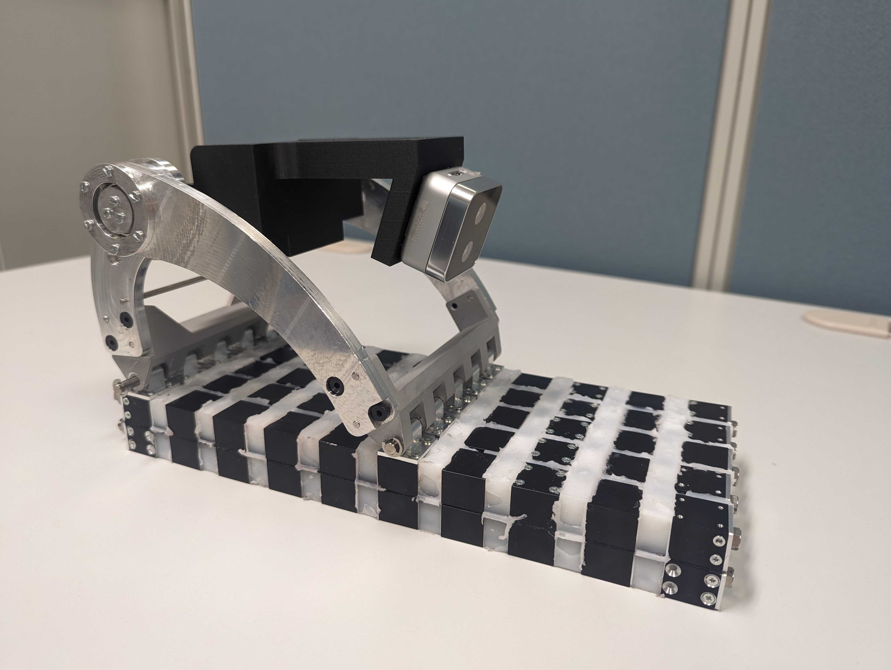
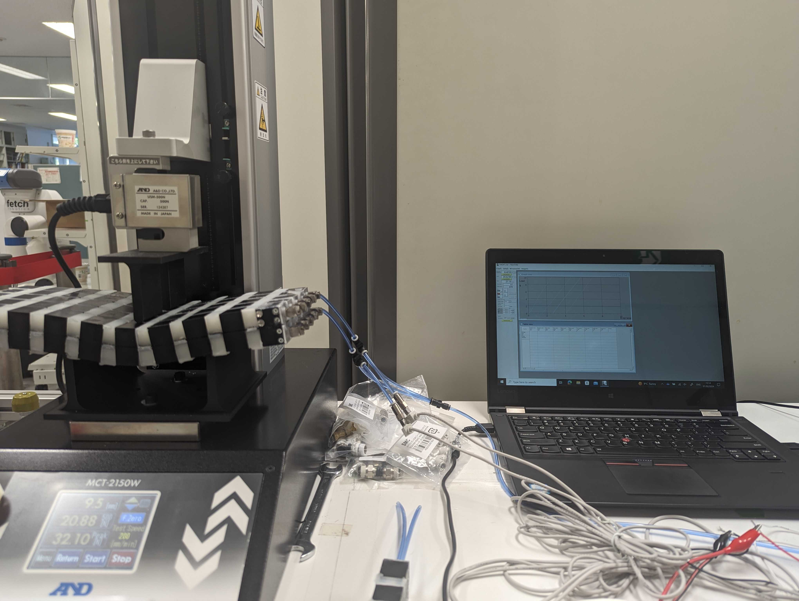

Home
Projects
Research
Experience
Skills
CV
← Back to Projects
Soft Pneumatic Feet for Humanoid Locomotion
A compact gallery with readable figures (manufacturing, hardware, experiments). Click any image to open it full-size.

Construction detail.
Modular segmented architecture.

Compliance demonstration.
Visible deformation under load/contact.

Pneumatics.
Valve block and tubing close-up.

Terrain interaction.
Stepping on uneven patches.

Full setup.
Experimental trial configuration.

Robot integration.
Feet mounted during trials.

Hardware prototype.
Close-up of assembled foot module.

Bench testing.
Compression test setup with data logging.
Mechanical structure.
Arch mechanism and layered sole.
System integration.
Valves, pneumatic tubes, and connectors.
Experiment sequence.
Ground profile, pressure/stiffness signals, and camera views during stepping.
Manufacturing process.
Mold assembly, wax core, silicone casting, and final assembly.